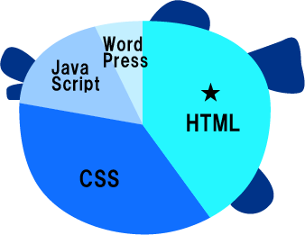
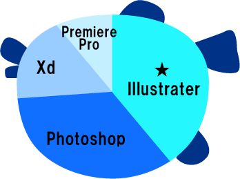

Skill
コーディング
HTML
Webサイト制作をする上で欠かせない、最も基本的なプログラミング言語であるHTMLを基礎から学んだ。
CSS
Webの装飾、レイアウト構成に加え、各ブラウザや様々な端末に対応するレスポンシブに必要な技術を学習した。
JavaScript
JavaScriptの基礎からjQuery、変数、Swiperの実装等、機能や特徴や言語に対する知識を深めた。
WordPress
WordPressの基礎、PHPの基礎、テーマファイルやテンプレートの作成、ウィジット機能の利用、プラグインの利用などを学んだ。
デザイン
Illustrator
イラスト、バナー、ロゴやアイコン作成やデザインカンプの模写などを通し、迅速かつ繊細に作成できる技術を学んだ。
PhotoShop
レイヤーの理解、写真のレタッチテクニック等を学び、バナー作成、デザインカンプの模写・作成、簡単なGIFアニメの作成を行った。

XD
XDの基礎からWebサイト構築、カンプ作成について学んだ。
Premiere Pro
簡単な動画の編集とアニメーション作成について学んだ。
オフィス

Excel
関数、グラフ作成、データベース、ピポットテーブルを学んだ。
Word
ビジネス文書作成、グラフの挿入、グラフィック機能の利用等を学んだ。
Power Point
プレゼンテーション陽の資料作成とプレゼンテーションの字一線について一連の流れを学んだ。